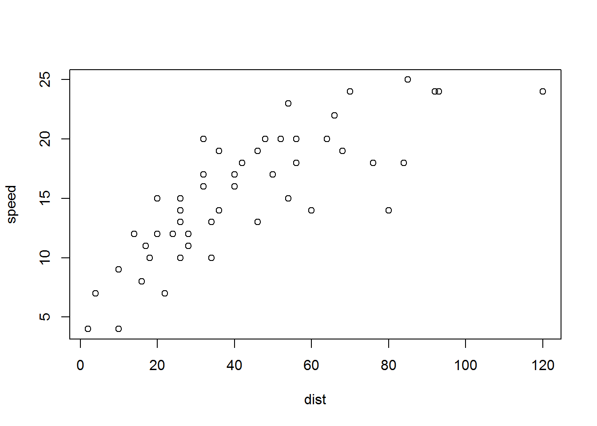
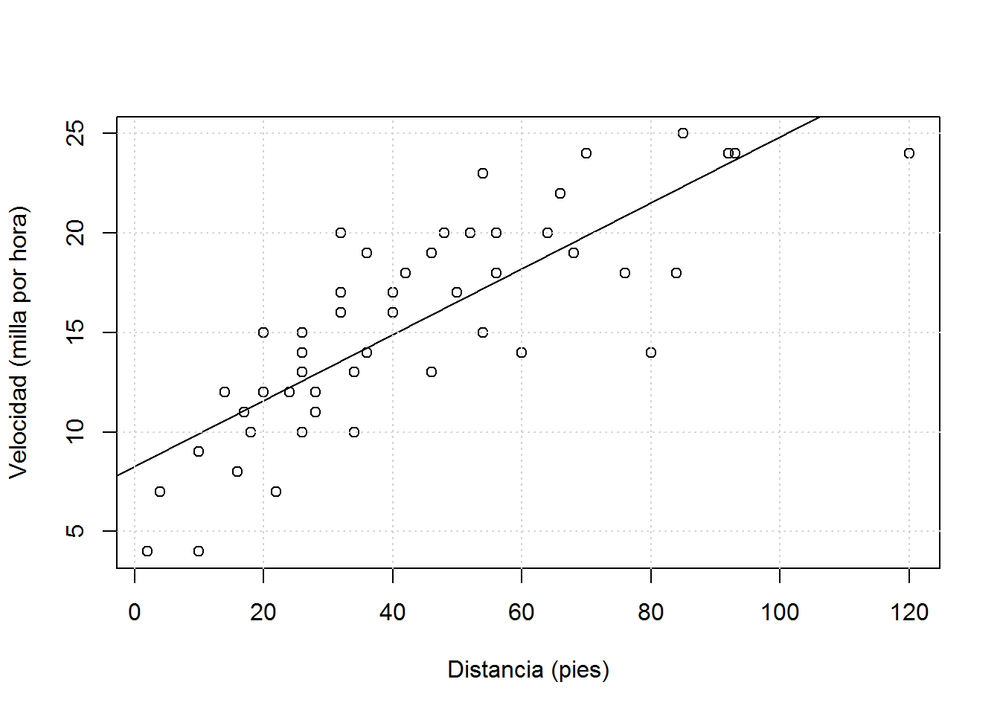
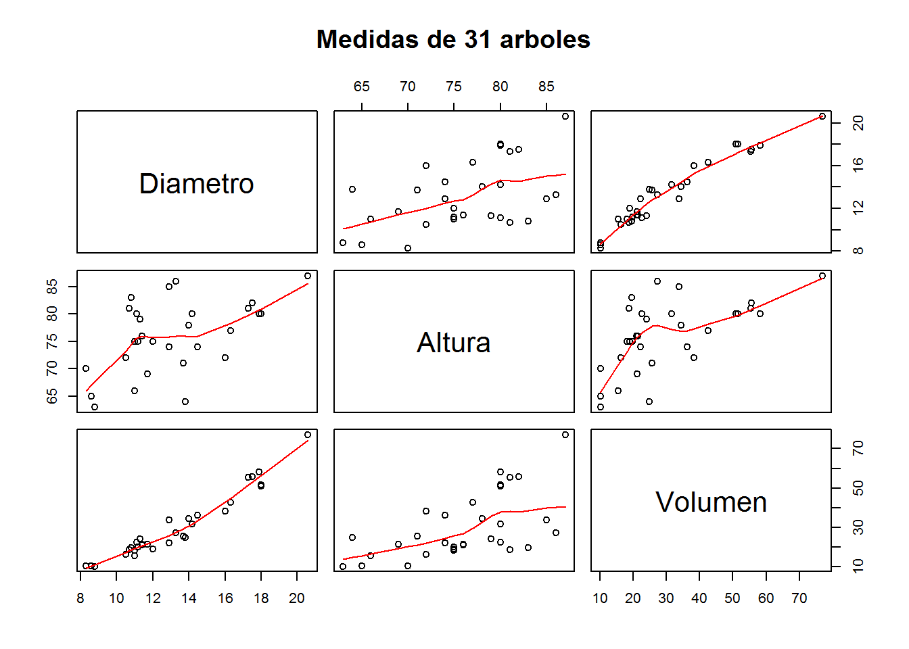
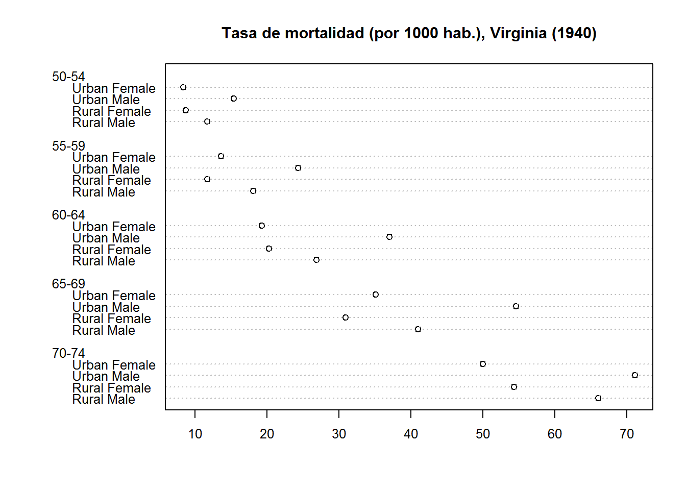
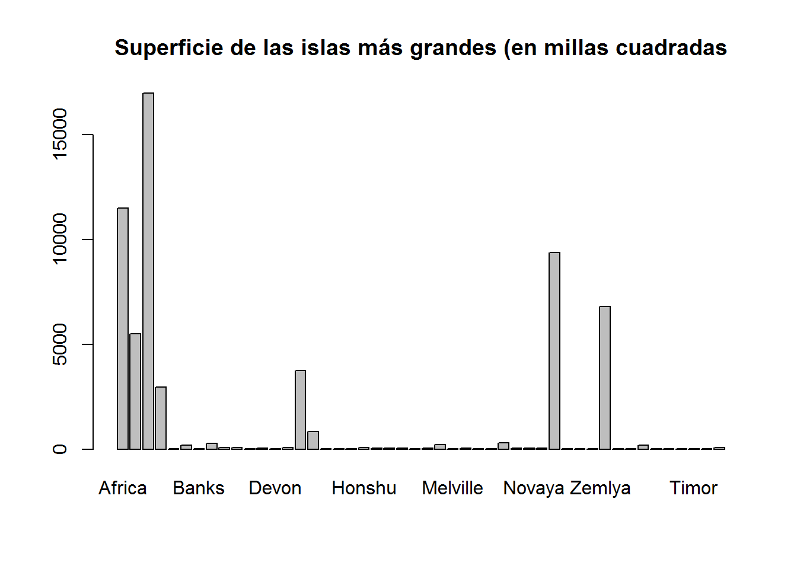
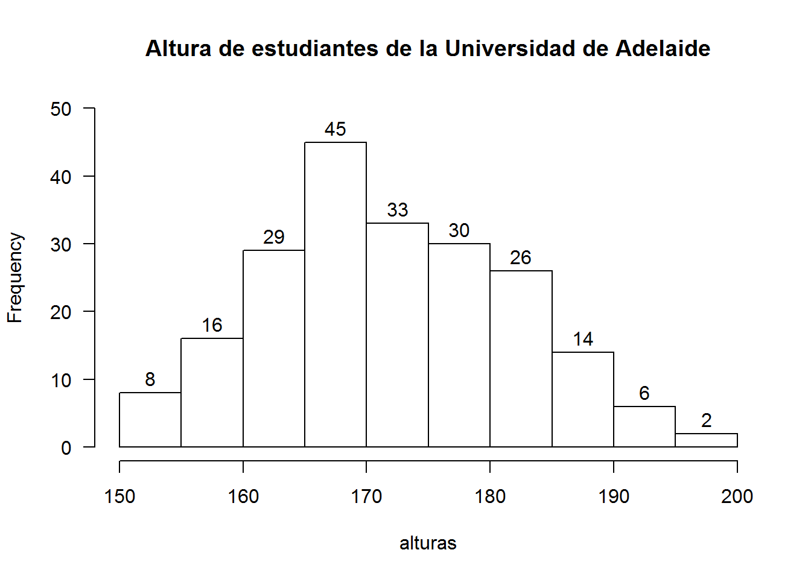
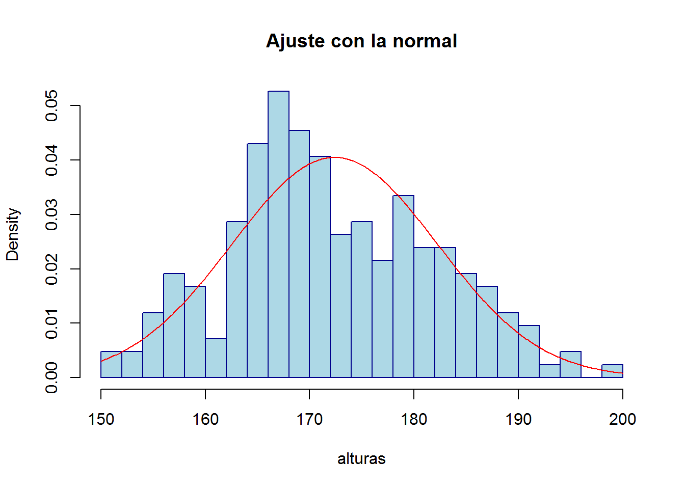
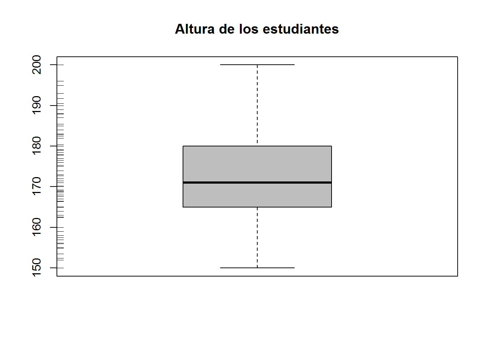
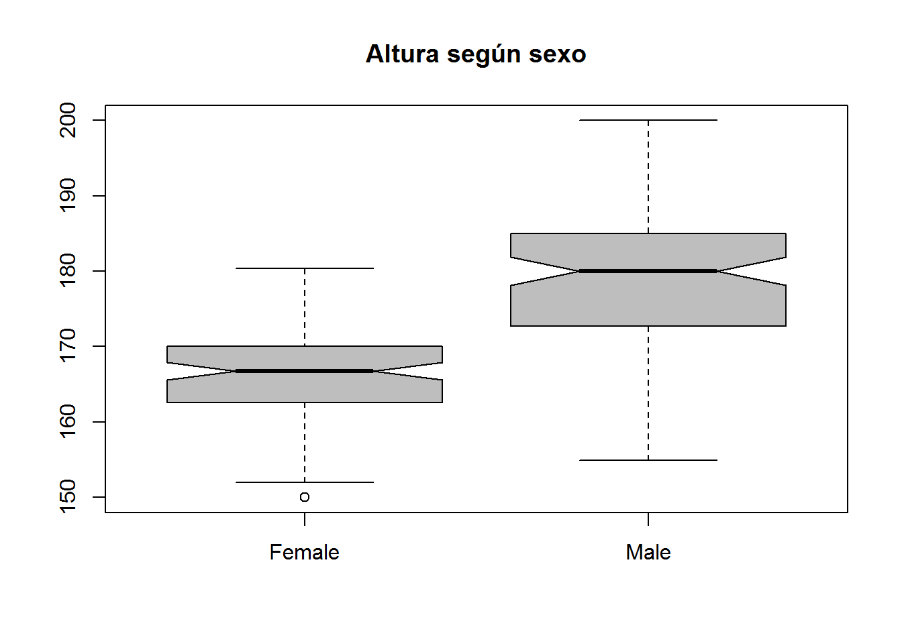

1 Gráficos básicos
Esta sección es una rapida introducción a los gráficos básicos en R. Estos gráficos sirven esencialmente para examinar de manera visual y rápida conjuntos de datos. Vamos a examinar los más habituales. Existen, sin embargo, muchos tipos más y hay libros enteros dedicados a ellos.
1.1 Gráficos de dispersión
Los gráficos de dispersión muestran la relación entre dos variables numéricas. En el ejemplo siguiente serán la velocidad y la distancia de frenado de un conjunto de coches recogidas en el conjunto de datos cars:
plot(speed~dist,data=cars)
La notación y ~ x es muy común en R y significa que se hace algo con y en función de x; en este caso, ese “algo”" es un grafico de y respecto a x. En los modelos de regresión, donde se pretende explicar las variaciones de y mediante las de x, se hará también uso de esta notación.
Los gráficos admiten opciones y elementos adicionales que van añadiéndose progresivamente al lienzo:
plot(speed~dist,data=cars, ylab="Velocidad (milla por hora)",xlab="Distancia (pies)")
abline(lm(speed~dist,data=cars))
grid()
Consulta ?par, una página de ayuda en R que muestra gran cantidad de parámetros modificables en un gráfico. > Investiga y usa col, lty y lwd. Nota: casi nadie conoce estos parámetros y, menos, de memoria; pero está bien saber que existen por si un día procede utilizarlos.
Lo anterior, se puede generalizar al análisis de más de dos variables mediante la función pairs():
names(trees)<-c("Diametro","Altura","Volumen")
pairs(trees, panel = panel.smooth, main = "Medidas de 31 arboles")
1.2 Gráficos de barra
Los gráficos de barras muestran los valores de un vector, típicamente construido como el promedio de una serie de variables numéricas o el conteo de unas categóricas.
Utilizamos la base de datos VADeaths que proporciona las tasas de mortalidad en Virginia por grupos socio-demograficos:
| Rural Male | Rural Female | Urban Male | Urban Female | |
|---|---|---|---|---|
| 50-54 | 11.7 | 8.7 | 15.4 | 8.4 |
| 55-59 | 18.1 | 11.7 | 24.3 | 13.6 |
| 60-64 | 26.9 | 20.3 | 37.0 | 19.3 |
| 65-69 | 41.0 | 30.9 | 54.6 | 35.1 |
| 70-74 | 66.0 | 54.3 | 71.1 | 50.0 |
barplot(VADeaths[, 2], xlab = "Tramos de edad", ylab = "Tasa de mortalidad (por 1000 mujeres)",
main = "Tasa de mortalidad en Virginia \n (mujeres en ambito rural, 1940)")
Los gráficos de puntos son alternativas recomendadas a las tradicionales barras:
dotchart(t(VADeaths), main = "Tasa de mortalidad (por 1000 hab.), Virginia (1940)", cex = 0.8)
Mejorar el gráfico de barra siguiente con los parámetro col (de color), horiz(de horizontal) e ylog (escala log). Aplicar dotchart a las superficies ordenadas.
barplot(islands, main = "Superficie de las islas más grandes (en millas cuadradas")
1.3 Histogramas
El histograma es una representación gráfica de la distribución de una variable númerica que permite hacerse una rapida idea de como se distribuyen los datos en la recta real (p.e., las alturas de un conjunto de personas).
require(MASS) #para cargar el conjunto de datos survey
names(survey)## [1] "Sex" "Wr.Hnd" "NW.Hnd" "W.Hnd" "Fold" "Pulse" "Clap"
## [8] "Exer" "Smoke" "Height" "M.I" "Age"alturas=na.omit(survey$Height)
hist(alturas,labels=TRUE,las=1,ylim=c(0,50),main="Altura de estudiantes de la Universidad de Adelaide")
El número de barra es arbitrario y puede distorsionar nuestra idea de la distribución:
hist(alturas,breaks=20,proba = TRUE,col="lightblue",border="blue4")Ajuste con una distribución normal (¡malo!):
hist(alturas,breaks=20,proba = TRUE,col="lightblue",border="blue4",main="Ajuste con la normal")
m=mean(alturas);s=sd(alturas)
x=seq(min(alturas),max(alturas),.1)
p=dnorm(x,m,s)
lines(x,p,col="red")
Estudiar la distribución del pulso de estos alumnos. Usar col para mejorar el aspecto del gráfico. Añádir un título y una etiqueta en el eje horizontal. Usar la función abline para dibujar una línea vertical roja en la media de la distribución.
1.4 Diagramas de caja (boxplots)
Los diagramas de caja son parecidos a los histogramas porque resumen la distribución de una variable continua (mediante una caja y unos segmentos que acotan las regiones donde la variable tiene el grueso de las observaciones). La representación es menos fina que la del histograma pero es más robusta (menos sensible a valores extremos).
boxplot(survey$Height, col = "gray",main = "Altura de los estudiantes")
rug(survey$Height, side = 2)
boxplot(Height ~ Sex, data=survey, notch=TRUE, col = "gray",main = "Altura según sexo")
Estudiar la distribución del pulso según el sexo mediante la función boxplot.
1.5 Expotación de los graficos
Los graficos se pueden exportar en diversos formatos:
- Imagen tipo bitmap (
jpeg(),png(),bmp(),tiff(),…) - Imagen vectorial (
pdf(),svg(),…)
Para más información consultar la ayuda ?Devices
Ejemplo de uso:
pdf("mifichero.pdf")
boxplot(Height ~ Sex, data=survey, notch=TRUE, col = "gray",main = "Altura según sexo")
dev.off()
png("mifichero.png")
boxplot(Height ~ Sex, data=survey, notch=TRUE, col = "gray",main = "Altura según sexo")
dev.off()Guarda el graficos en formato pdf y png en ficheros del directorio de trabajo
Las imagenes vectoriales tienen una resolución “infinita”" y ocupan poca memoria. Sin embargo, no todos los editores de texto admiten este tipo de formato.